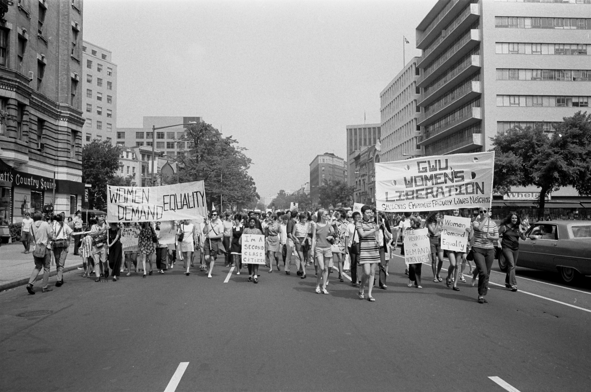
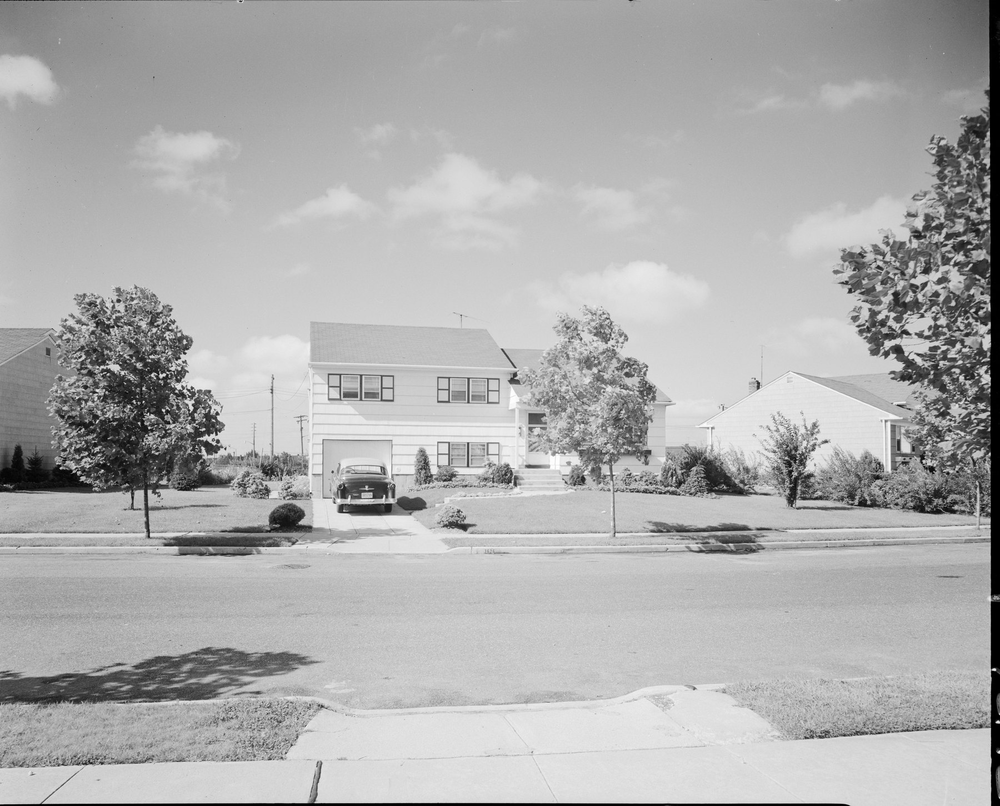
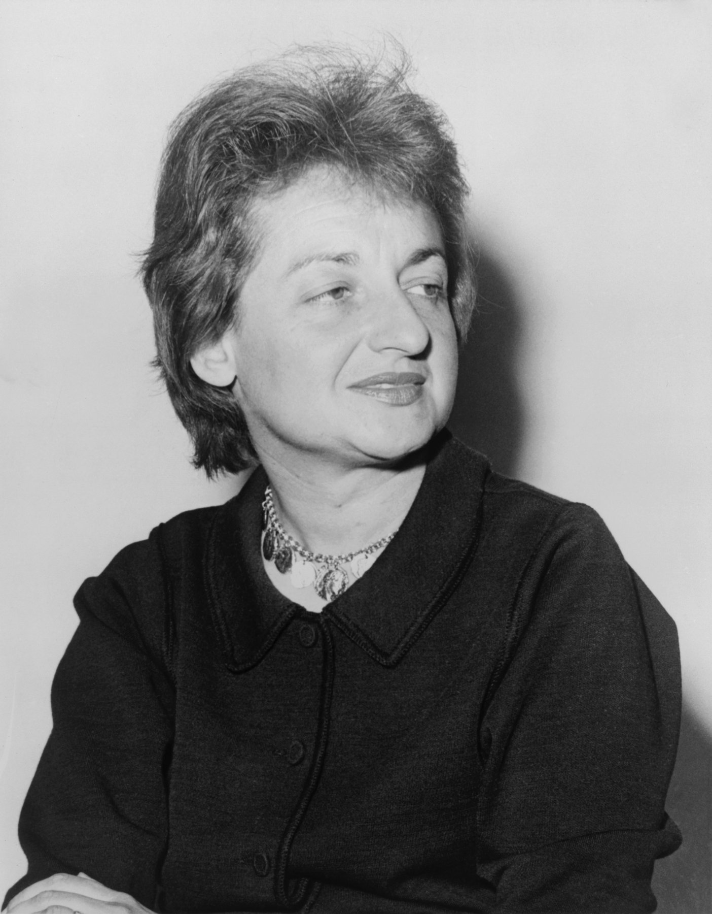
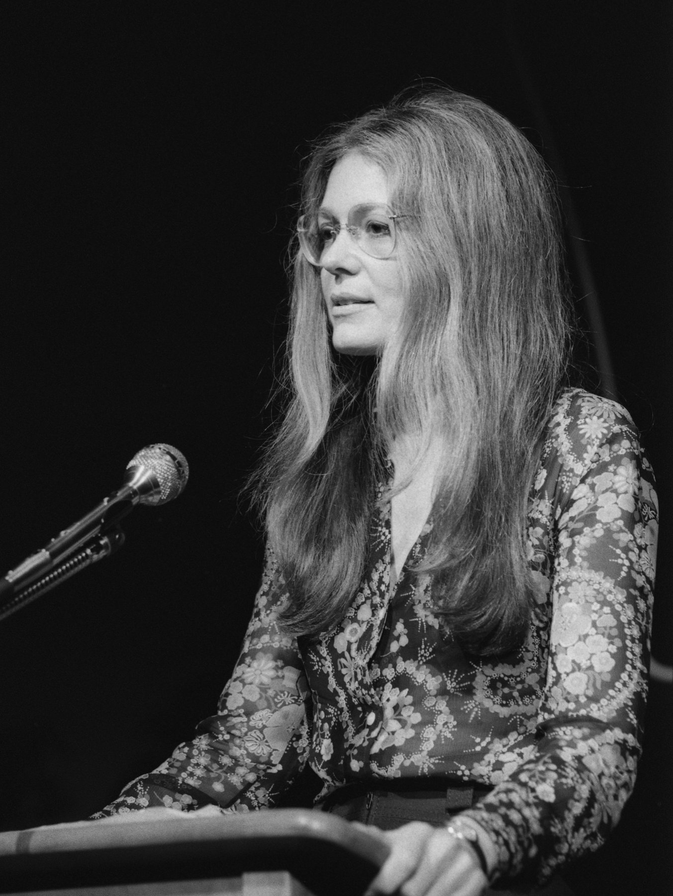
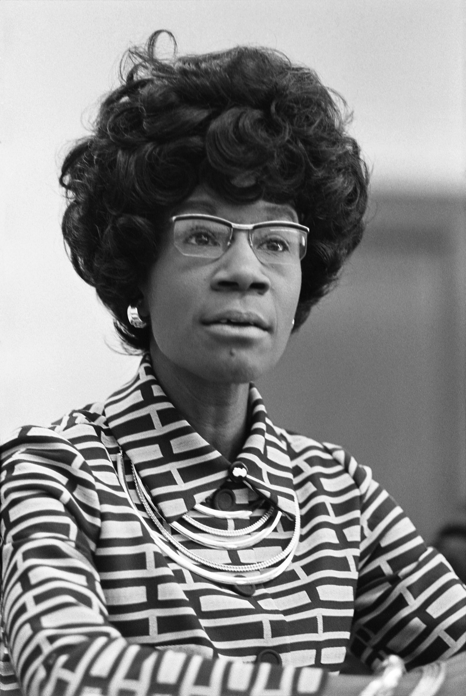
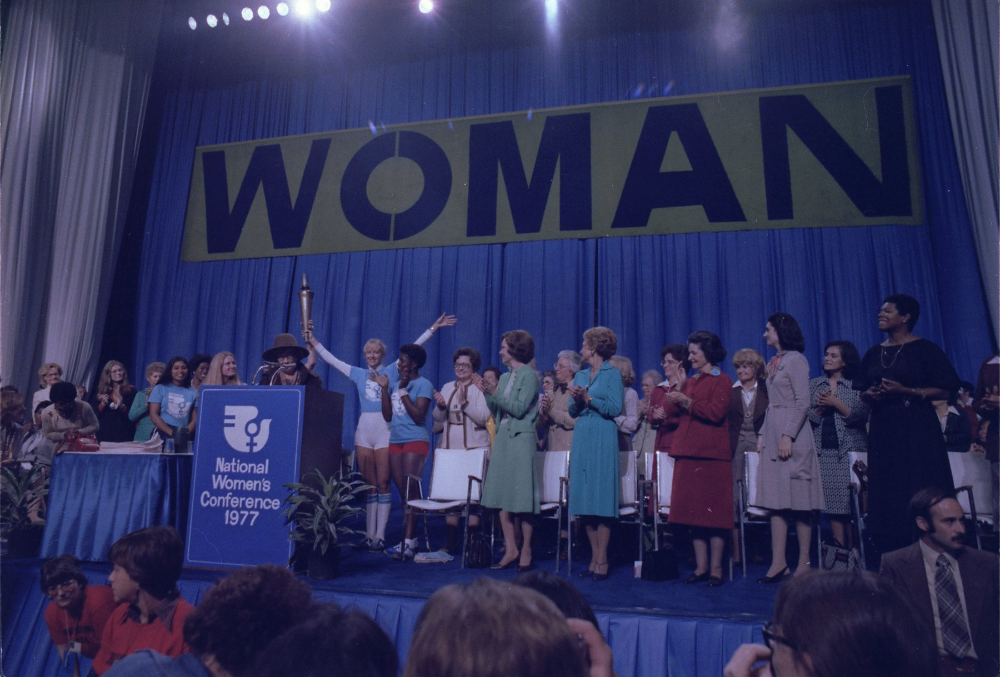
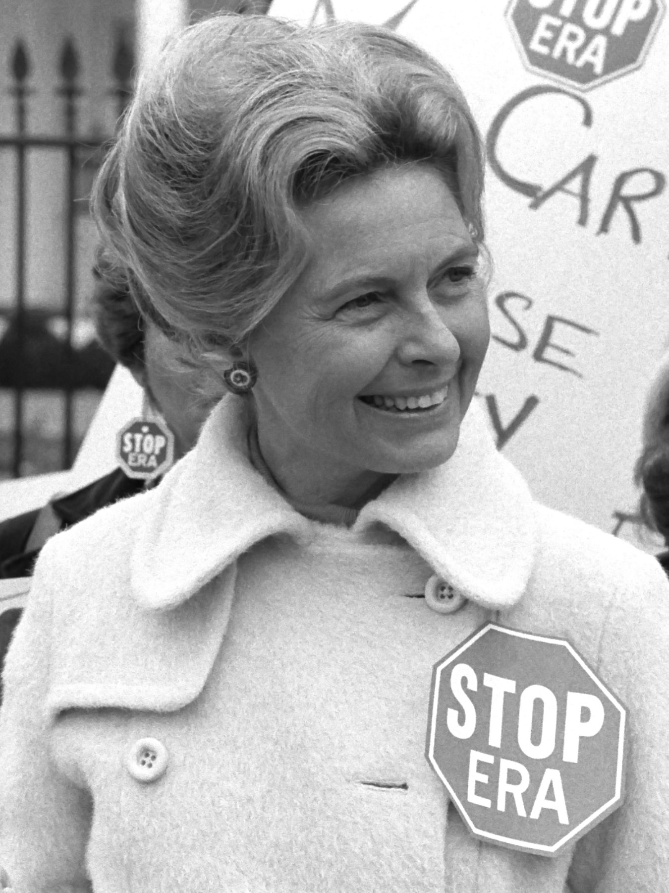

Monday · Feminism
(c. 1963–1982):
After the vote, the house. Then a public argument that housework, sex, pay, and who counted were already politics.

“” is a later Anglo-American classroom name, not what most of the people in this capsule called themselves. The dates are a convenience: (1963) at one end, the ’s extended ratification deadline (30 June 1982) at the other. The United States is the spine because the numbering is. Other countries’ 1960s–70s feminisms are contemporaneous — not a seating chart of copies.
Select any words, or tap a dotted term.
- 1963 Mystique / pay ’s . The the same year. A bestseller and a statute; neither was the whole cause.
- 1966 NOW founded in Washington, 30 June, after a conference of . first president; among the founders.
- 1968 Atlantic City protest the pageant, 7 September. . No fire.
- 1970 Books / strike / Ruskin ; ; ; as newsprint; , 26 August; first UK conference at .
- 1972–73 Statute / Roe in the (signed 23 June). sent to the states. . decided 22 January 1973.
- 1977 Combahee / Houston (April). in Houston (November), and a conservative in the same city.
- 1982 Deadline ratification deadline expires 30 June, three states short. already in office; since 1979. The later names — , — are not yet the ones in use.
Before
The vote, the doldrums, and a house with a name on the mailbox
The First Wave (c. 1848–1920) ended, in the United States, with a constitutional sentence about the vote. What followed, in the usual textbook weather report, is the : the suffrage coalition thinned, the that had already written sat in Congress, and a middle-class public story put women back in the house as if the house were a prize. The word “” is a later forecast. It describes one organized current going quiet. It does not mean the questions ended, and it does not mean every woman had been in that current.
Suburban domesticity had an architecture. Mass-produced houses, a car in the drive, a lawn that looked like a job. Magazines sold the picture. So did advertisers and a certain kind of expert. would call the picture — a destiny with appliances. The picture was never a map of the country. Black women, working-class women, and anyone who had not been offered the delicate house were already in the workplace, already in other people’s kitchens, already counted as labor. The gap the left — who counted as the “woman” the movement was picturing — did not close in 1920. It went indoors and called itself normal.

There was already law at the door of the 1960s. ’s (1961) produced reports and a string of state commissions. The arrived in 1963. of the named sex in employment. The then had to decide whether that word was a mandate or a joke. The school many organizers came out of was not a commission. It was civil rights and the : , the antiwar movement, . and ’s 1965 memo “,” circulated in , is one document of what women learned there — how to run a meeting, and who was expected to take notes in it.
The era
A public spark, a method, and a street that would not stay private
’s , published by in 1963, is the public spark American memory keeps. It is not the cause. wrote about college-educated housewives and “.” The book sold because a class of readers recognized themselves. Women who had never been offered that house did not need to tell them they were tired. Treat the book as a door that magazines could see. Do not treat it as the building.

On 30 June 1966, at the Third National Conference of Commissions on the in Washington, twenty-eight people founded the . became president. , who had already named “,” helped write the : women into the mainstream of American society . was built like a civil-rights organization — complaints to the , lawsuits, lobbying. It was one current. small groups were another: (1967), (1969), , and dozens of unnamed living-room meetings. was the method. put it on paper in 1968. You spoke from your own life until housework, sex, pay, and shame stopped looking like a private failure.
wrote a memo in February 1969 defending those meetings against the charge that they were therapy. When and printed it in (1970), they titled it “.” has said the title is theirs. The claim is the ’s: the home was already a political economy. So were abortion, heterosexuality, and the unpaid second shift.
How it showed: , and the 26 August 1970 on the ’s fiftieth anniversary. groups that would not be . The of 7 September 1968 in Atlantic City — , a , a banner inside the hall, men kept off the action, no fire on a wooden boardwalk. The same night, a pageant ran in the same city as a different answer to a white national symbol. began as a 1969 Boston workshop and 1970 newsprint from the group later called the . ’s and ’s both arrived in 1970. ’s first standalone issue is 1972; was a founding editor. Legislation, in the United States: of the , signed 23 June — a sex-discrimination rule for federally funded education, with in the House and in the Senate; sports became the picture people could see. , 22 January 1973: a 7–2 Supreme Court, writing, held that the ’s due-process privacy covered a woman’s decision to end a pregnancy, with a trimester framework, and struck down Texas’s criminal statute. It was a constitutional holding. It was not a law that “legalized abortion” in a sentence. came down the same day.

{kind=link}
is inside this span, not a footnote written later. The formed in 1973. The , in Boston from 1974, put a statement in April 1977. had already refused to wait: ’ “,” and the action at the on 1 May 1970, answering ’s slur by wearing it. By the late 1970s the arguments were also about pornography and about difference — dates to 1979 — and those fights run past the 1982 line this capsule uses as a date, not as a conclusion.

The field
Many names, then three places to slow down
A gallery of three portraits is the wrong picture. Name them, then stop treating the names as the . , , , . at ’s founding. in Congress and on a 1972 ballot. . and on . and on method. on the boardwalk in 1968. on the other side of the . , , on a 1977 statement. in 1981, late, already arguing with a “women” that had been too small. in Tokyo. in Taipei. The action as an event that does not belong to one face.
Slow down for three, as examples inside the field, not as the field. as a public door. as a method. as the who-counts problem returning in public — the same problem the capsule left on the table, under a different name.
A story
A door, a circle, and a we that would not queue
The door: ’s book gave a class of readers a plot in which their unhappiness was not a personal defect. Magazines could review that plot. Television could book it. could walk through it into the ’s office. The limitation is the same fact as the success. A feminism whose opening scene is a white suburban kitchen will treat everyone else as a later chapter. Working women, Black women, lesbians — they were not later. They were already there, poorly filed.
The circle: made a technique out of that filing error. You did not begin with a program. You began with what had been called trivia — who does the dishes, who gets believed, who is afraid on the street — and you waited until the trivia had a structure. ’s memo is the defense of that wait. The had said: those are personal problems; the revolution will fix them; type this stencil in the meantime. said the stencil was the revolution’s unfinished business. It could become its own trap: a room of people who already resembled each other, mistaking recognition for a census. The method does not excuse the room. It explains why the room felt like politics.
The we: the , April 1977, is not an appendix to . A Black feminist lesbian socialist collective in Boston, named for ’s 1863 raid, wrote that racial, sexual, heterosexual, and class oppression lock together, and that they would not be asked to choose which liberation to stand in line for. “,” in their usage, is the opposite of a veto. It is a starting position from which coalition might be possible because no one is required to disappear. , , and are the three who later talked about writing it. The statement is the collective’s. Four years later, ’s (1981) is late in this window on purpose: a book arguing with a movement that had already decided what “woman” sounded like. The title borrows a nineteenth-century question this archive has already complicated. The 1981 argument is new only if you were not listening.
Elsewhere
The same years, not a franchise
In France the press named a around a 26 August 1970 demonstration at the Arc de Triomphe. On 5 April 1971, printed the : women stating they had had abortions, among them. was already twenty years old. In Britain, the first National Conference met at , Oxford, 27 February–1 March 1970, and listed four demands: equal pay; equal education and opportunity; 24-hour nurseries; free contraception and abortion on demand. In Japan, was not a translation of a New York leaflet. ’s (1970) went at the family system and at men on the left; the (1972–77) was a shelter and a clinic. In Taiwan, under martial law, lectured on at on 8 March 1972 and published in 1974: first a person, then a man or a woman. That is a 1970s feminism. It is not an Asian guest at an American table.
The same years, in the same cities, were also civil rights, , the antiwar movement, student revolt, and, after in 1969, gay liberation. came out of those rooms and fought in them. A capsule that treated those movements as scenery would be repeating the error it is trying to describe.
After
A deadline, a backlash, and names that arrive late

Houston in November 1977 is one picture of a peak: a federally funded conference, a , three First Ladies, a torch walked from . It is also a picture of a split. The Plan included the , abortion, lesbian rights, minority women. Opponents held their own rally. ’s had been at work since 1972. On 4 February 1977 her people were already at the White House fence with stop-sign stickers. Congress had sent the to the states in 1972. The deadline, extended, expired on 30 June 1982, three states short of thirty-eight.

took office in May 1979. in January 1981. would call the 1980s a in a 1991 book of that name. The word is later. The weather is in these last years: an official mood that feminism had been tried, or had gone too far, or had been a coastal taste. stood until in 2022. That sentence is outside the . It belongs here as a fate, not as a twist.
The door into what gets called the is a later naming. ’s “” is 1992, in , as a word, is in 1989. did not need the word to state interlocking oppressions. The staircase — first the vote, then the rest, then a third flight — is the after. It is useful until it hides the people who were never on the stairs.
A question
Leave this on the table
When a movement says , whose personal is allowed to count as politics?
Fun fact
There was no fire on the boardwalk
On 7 September 1968, put bras, girdles, high heels, curlers, and women’s magazines into a “” outside the pageant in Atlantic City. They asked the city for a permit to burn the contents. The permit was refused: the boardwalk is wood. Nothing was burned. Newspapers, then ’s column, reported a bra-burning anyway. The trash can is the event. The bonfire is the copy.